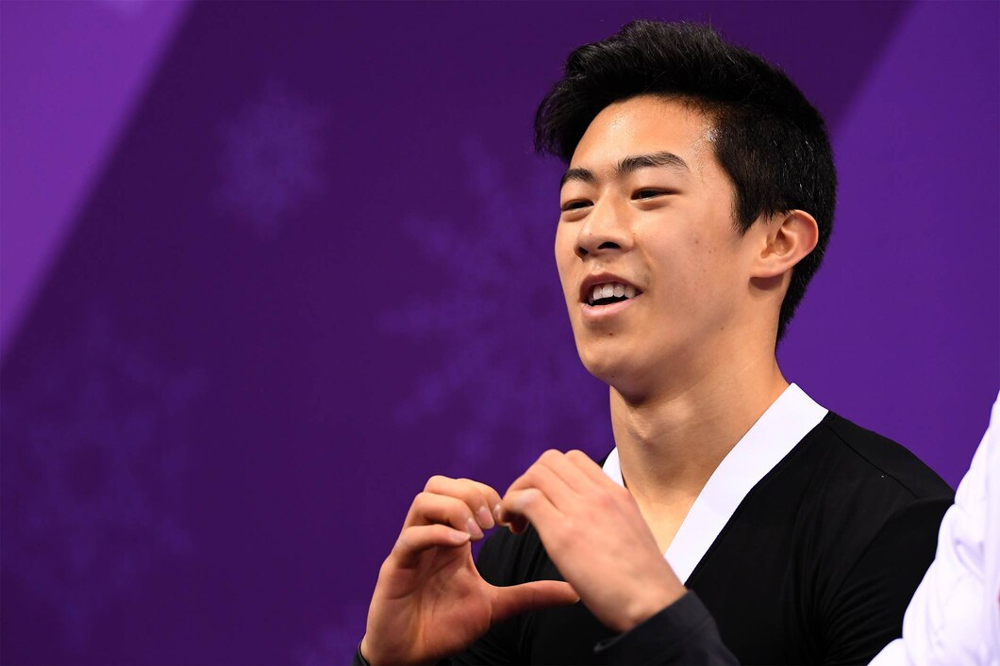

A QUADRUPLE AXEL IN COMPETITION? “NOT ANYTIME SOON” FOR WORLD CHAMPION NATHAN CHEN
OLYMPIC NEWS
THERE ARE STILL LANDMARK ACHIEVEMENTS TO COME IN FIGURE SKATING. AS THE DISCIPLINE EVOLVES, THE NUMBER OF QUADRUPLE JUMPS IS INCREASING; BUT THERE IS ONE THAT HAS NEVER YET BEEN PERFORMED: THE QUADRUPLE AXEL, ALREADY THE MOST DIFFICULT JUMP AS A TRIPLE. NATHAN CHEN, THE 2018 WORLD CHAMPION AND QUAD SPECIALIST, DOES NOT THINK ANYONE WILL ACHIEVE THIS ANYTIME SOON.
It is now 30 years since the first quadruple jump (a toe loop) was performed in competition by Canada’s Kurt Browning at the ISU World Championships in Budapest in 1988; and this has become an essential feature for anyone wanting to win medals at continental, world and Olympic level. Gradually, other jumps (the Salchow, Lutz, flip and toe loop) were performed as quadruples, while among the female skaters, Japan’s Miki Ando was the first to achieve this, in 2002, with a quadruple Salchow. But these jumps have never yet been performed as a combination; and there is one that even the greatest skaters have never managed to execute: the Axel.
Indeed, for the Axel (take-off from the forward outside edge of one skate followed by one-and-a-half rotations and landing on the back outside edge of the other skate), the “quadruple” means four-and-a-half rotations, while all the other quads need only three-and-three-quarters. The triple version of this invention by Norwegian skater Axel Paulsen in 1882 is still regarded as the hardest and highest marked of the six different jumps recognised by the ISU.
Who will be the first person to perform a quadruple Axel in competition? Brian Orser, the highly regarded coach of two-time Japanese Olympic champion Yuzuru Hanyu, is convinced that the skater has what it takes to achieve this. It is even one of Hanyu’s main ambitions. But he has been battling injury, and his career has vacillated between wins and withdrawals, since his fantastic Olympic victory at PyeongChang 2018.
#GETTY IMAGES
SIX QUADS FOR NATHAN CHEN IN HIS PYEONGCHANG 2018 FREE SKATE
At the same time, America’s Nathan Chen has been accumulating exploits and successes. The skater, born in the Olympic city of Salt Lake City in 1999, made a name for himself at the Games in Korea. After winning bronze in the team competition with the USA, he had a disastrous short programme in the men’s competition, managing only 17th place in the event dominated by Hanyu.
But the next day, on 17 February, Chen produced the best score in the free skate thanks to a feat nobody had ever previously achieved: he landed six perfect quadruple jumps, which he skated to Igor Stravinsky’s “Rite of Spring”, earning a score of 215.08 and fifth place, while Hanyu became the first man since Dick Button (St Moritz 1948 and Oslo 1952) to successfully defend his Olympic title, ahead of compatriot Shoma Uno and Spain’s Javier Fernandez.
MERYL DAVIS PUTS THE QUESTION TO CHEN FOR THE OLYMPIC CHANNEL
A month later, in Milan, the 18-year-old American skater, who lives in California, became the youngest world champion since Yevgeni Plushenko in 2001, with another six quads in his free skate and a record lead of 47.63 points over the second-placed skater, Japan’s Olympic silver medallist Shoma Uno. During the year, Chen pulled off all seven of the triple Axels he attempted! He ended December with an impressive win in the ISU Grand Prix final in Vancouver. There, Meryl Davis (Sochi 2014 Olympic ice dance champion with Charlie White) met him and asked this question for the Olympic Channel.
“Do you think that anyone will manage to do a quadruple Axel?” To which the world and US champion replied: “Difficult to say. I think it’s doable, but it probably won’t happen anytime soon.” In 2018, Chen also began a course of study at Yale University. “I’m really busy! It’s added a lot to my life, both within and outside skating. But I love it. I’m learning a lot, and I feel it’s the right time to do this now. I’m trying to do my utmost to stay at the same level as the last two seasons, and I always try to develop and improve my skating.”
Will Nathan Chen be the first person to perform a quadruple Axel? Or will it be another skater, like Yuzuru Hanyu? Before the 2022 Games in Beijing? During them? Afterwards? Only time will tell.
TAGS | OLYMPIC NEWS, FIGURE SKATING, PYEONGCHANG 2018, UNITED STATES OF AMERICA
#Article from Olympic